URL Shortening System Design
TinyURL Service
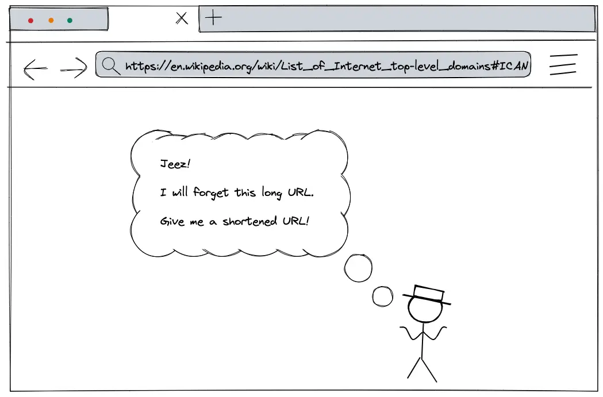
The target audience for this article falls into the following roles:
- Tech workers
- Students
- Engineering managers
The prerequisite to reading this article is fundamental knowledge of system design components. This article does not cover an in-depth guide on individual system design components.
Disclaimer: The system design questions are subjective. This article is written based on the research I have done on the topic and might differ from real-world implementations. Feel free to share your feedback and ask questions in the comments.
The system design of the URL shortener is similar to the design of Pastebin. I highly recommend reading the related article to improve your system design skills.
Download my system design playbook for free on newsletter signup:
How does a URL shortener work?
At a high level, the URL shortener executes the following operations:
- the server generates a unique short URL for each long URL
- the server encodes the short URL for readability
- the server persists the short URL in the data store
- the server redirects the client to the original long URL against the short URL
Terminology
The following terminology might be useful for you:
- Microservices: designing software that is made up of small independent services, which have a specific purpose
- Service Discovery: the process of automatically detecting devices and services on a network
- CDN: a group of geographically distributed servers that speed up the delivery of web content by bringing the content closer to the users
- API: a software intermediary that allows two applications or services to talk to each other
- Encoding: the process of converting data from one form to another to preserve the usability of data
- Encryption: secure encoding of data using a key to protect the confidentiality of data
- Hashing: a one-way summary of data that cannot be reversed and is used to validate the integrity of data
- Bloom filter: a memory-efficient probabilistic data structure to check whether an element is present in a set
What is a URL shortening service?
A URL shortening service is a website that substantially shortens a Uniform Resource Locator (URL). The short URL redirects the client to the URL of the original website. Some popular public-facing URL shortening services are tinyurl.com and bitly.com1.
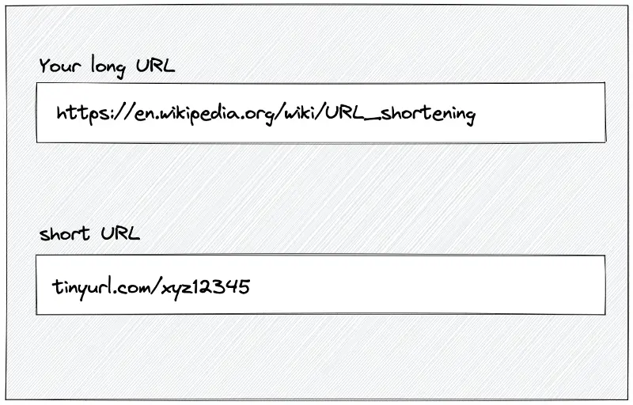
The reasons to shorten a URL are the following:
- track clicks for analytics
- beautify a URL
- disguise the underlying URL for affiliates
- some instant messaging services limit the count of characters on the URL
Questions to ask the Interviewer
Candidate
- What are the use cases of the system?
- What is the amount of Daily Active Users (DAU) for writes?
- How many years should we persist the short URL by default?
- What is the anticipated read: write ratio of the system?
- What is the usage pattern of the shortened URL?
- Who will use the URL shortener service?
- What is the reasonable length of a short URL?
Interviewer
- URL shortening and redirection to the original long URL
- 100 million DAU
- 5 years
- 100: 1
- Most of the shortened URLs will be accessed only once after the creation
- General public
- At most 9 characters
Requirements
Functional Requirements
- URL shortening Service similar to TinyURL, or Bitly
- A client (user) enters a long URL into the system and the system returns a shortened URL
- The client visiting the short URL must be redirected to the original long URL
- Multiple users entering the same long URL must receive the same short URL (1-to-1 mapping)
- The short URL should be readable
- The short URL should be collision-free
- The short URL should be non-predictable
- The client should be able to choose a custom short URL
- The short URL should be web-crawler friendly (SEO)
- The short URL should support analytics (not real-time) such as the number of redirections from the shortened URL
- The client optionally defines the expiry time of the short URL
Non-Functional Requirements
- High Availability
- Low Latency
- High Scalability
- Durable
- Fault Tolerant
Out of Scope
- The user registers an account
- The user sets the visibility of the short URL
URL Shortener API
The components in the system expose the Application Programming Interface (API) endpoints through Representational State Transfer (REST) or Remote Procedure Call (RPC). The best practice to expose public APIs is through REST because of loose coupling and easiness to debug 2, 3.
Once the services have hardened and performance should be tuned further, switch to RPC for internal communications between services. The tradeoffs of RPC are tight coupling and difficulty to debug4.
URL shortening
The client executes an HTTP PUT request to the server to shorten a URL. The HTTP PUT method is used because the PUT is idempotent and the idempotency quality resonates with the given requirement of 1-to-1 mapping between the long and short URL.
|
|
The description of URL shortening HTTP request headers is the following:
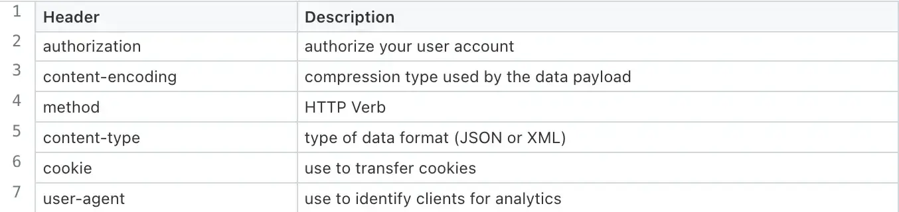
The description of URL shortening HTTP request body parameters is the following:
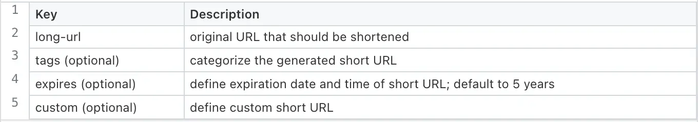
The server responds with a status code of 200 OK for success. The HTTP response payload contains the shortened URL and related metadata 5, 6.
|
|
The description of URL shortening HTTP Response headers is the following:
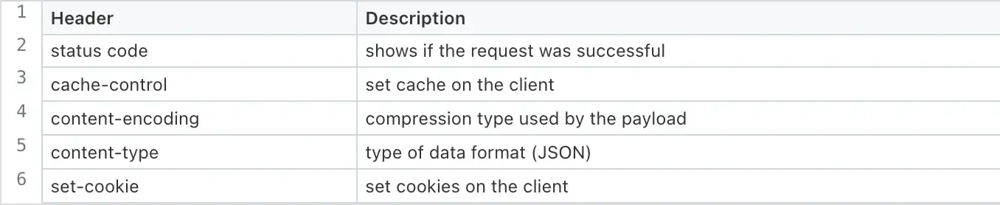
The description of URL shortening HTTP Response payload parameters is the following:
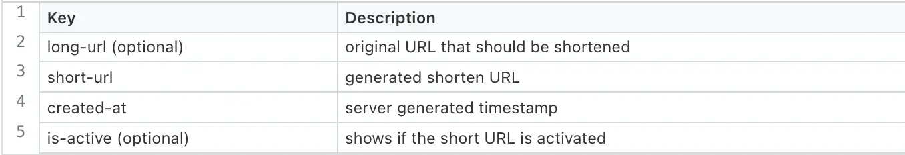
The client receives a status code 401 unauthorized if the client did not provide any credentials or does not have valid credentials.
|
|
The client sees a status code 403 forbidden if the client has valid credentials but not sufficient privileges to act on the resource.
|
|
URL redirection
The client executes an HTTP GET request to redirect from the short URL to the original long URL. There is no request body for an HTTP GET request.
|
|
The description of URL redirection HTTP request headers is the following:
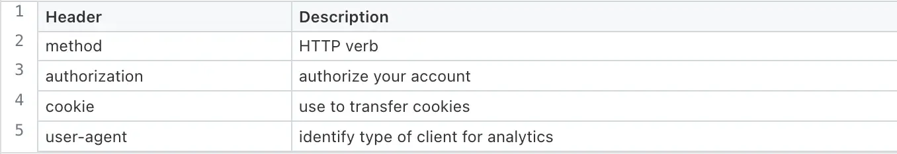
The server responds with status code 301 Moved Permanently. The status code 301 indicates that the short URL is permanently moved to the long URL. The web crawler updates its records when the status code 301 is received 5, 6.
The 301 status code stores the cache on the client by default. The URL redirection requests do not reach the server because of the cache on the client side. If the redirection requests do not reach the server, analytics data cannot be collected. The cache-control header on the HTTP response is set to public to prevent caching on the client side. The public cache lives on the content delivery network (CDN) or the reverse proxy servers. Analytics data is collected from the servers.
|
|
The server sets the location HTTP header to the long URL. The browser then automatically makes another HTTP request to the received long URL. The original website (long URL) is displayed to the client.
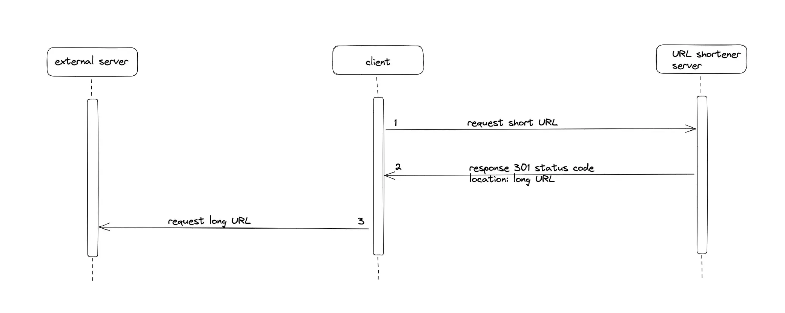
The description of URL redirection HTTP response headers is the following:
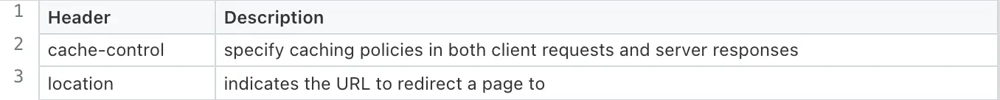
The HTTP response status code 302 is a temporary redirect. The server sets the location header value to the long URL. The 302 status code does not improve the SEO rankings of the original website.
|
|
The HTTP response status code 307 is a temporary redirect. The 307 status code lets the client reuse the HTTP method and the body of the original request on redirection. For instance, when the client received a 307 status code in response to a redirection request, the client can execute a PUT request against the original long URL. Contrarily, the status codes 301 and 302 automatically convert the HTTP requests to HTTP GET requests.
|
|
The server responds with the status code 404 Not Found when the client executes a redirection request on the short URL that does not exist in the database.
|
|
In summary, use the 301 status code in the HTTP response to meet the system requirements.
Further system design learning resources
Download my system design playbook for free on newsletter signup:
Database
The URL shortener system is read-heavy. In other words, the dominant usage pattern is the redirection from short URLs to long URLs.
Database schema design
The major entities of the database (data store) are the Users table and the URL table. The relationship between the Users and the URL tables is 1-to-many. A user might generate multiple short URLs but a short URL is generated only by a single user.
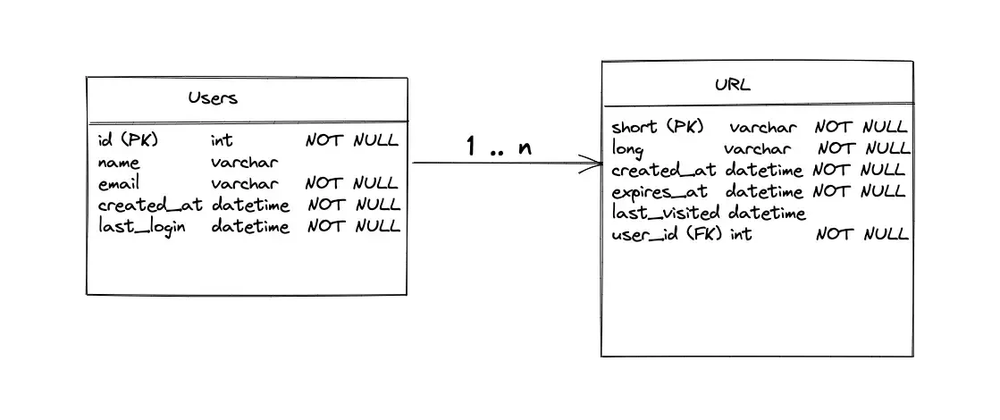
URL table
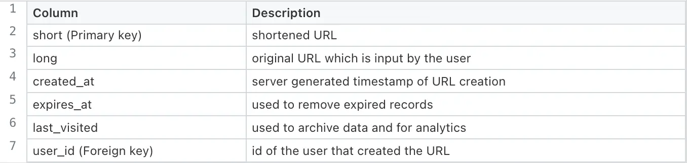
Sample data of URL table
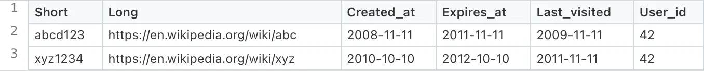
Users table
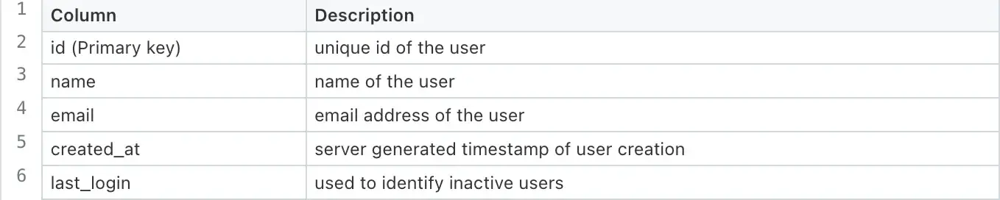
Sample data of Users table
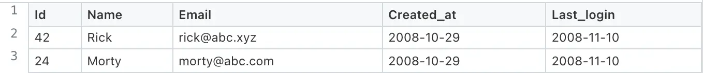
Type of data store
A NoSQL data store such as DynamoDB or MongoDB is used to store the URL table. The reasons for choosing NoSQL for storing the URL table are the following:
- Non-relational data
- Dynamic or flexible schema
- No need for complex joins
- Store many TB (or PB) of data
- Very data-intensive workload
- Very high throughput for IOPS
- Easy horizontal scaling
A SQL database such as Postgres or MySQL is used to store the Users table. The reasons to choose a SQL store for storing the Users table are the following:
- Strict schema
- Relational data
- Need for complex joins
- Lookups by index are pretty fast
- ACID compliance
When the client requests to identify the owner of a short URL, the server queries the Users table and the URL table from different data stores and joins the tables at the application level.
Capacity Planning
The number of registered users is relatively limited compared to the number of short URLs generated. The capacity planning (back of the envelope) calculations focus on the URL data. However, the calculated numbers are approximations. A few helpful tips on capacity planning for a system design are the following:
- 1 million request/day = 12 request/second
- round off the numbers for quicker calculations
- write down the units when you do conversions
Traffic
The URL shortener is read-heavy. The Daily Active Users (DAU) for writes is 100 million. The Query Per Second (QPS) of reads is approximately 100 thousand.
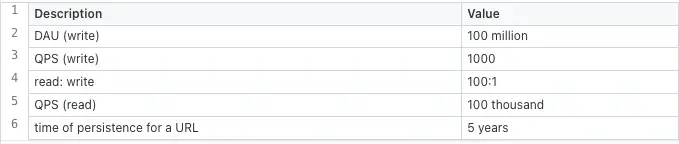
Storage
The shortened URL persists by default for 5 years in the data store. Each character size is assumed to be 1 byte.
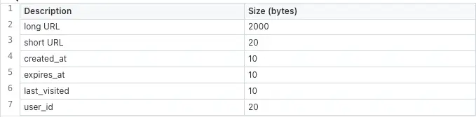
In total, a URL record is approximately 2.5 KB in size.
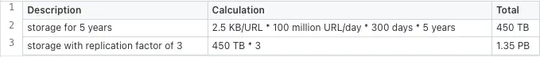
Set the replication factor of the storage to a value of at least three for improved durability and disaster recovery.
Bandwidth
Ingress is the network traffic that enters the server (client requests). Egress is the network traffic that exits the servers (server responses).
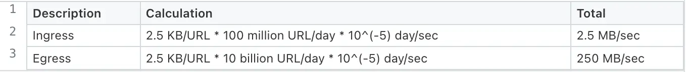
Memory
The URL redirection traffic (egress) is cached to improve the latency. Following the 80/20 rule, 80% of egress is served by 20% of URL data stored on cache servers. The remaining 20% of the egress is served by the data store to improve the latency. A Time-to-live (TTL) of 1 day is reasonable.
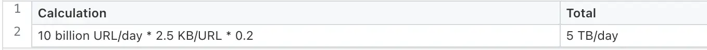
Capacity Planning Summary
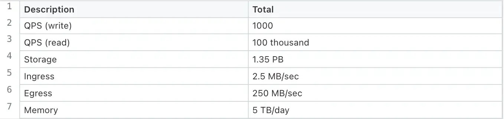
Further system design learning resources
Download my system design playbook for free on newsletter signup:
High-Level Design
Encoding
Encoding is the process of converting data from one form to another. The following are the reasons to encode a shortened URL:
- improve the readability of the short URL
- make short URLs less error-prone
The encoding format to be used in the URL shortener must yield a deterministic (no randomness) output. The potential data encoding formats that satisfy the URL shortening use case are the following:
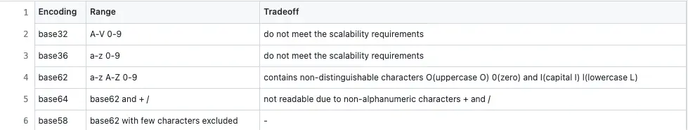
The base58 encoding format is similar to base62 encoding except that base58 avoids non-distinguishable characters such as O (uppercase O), 0 (zero), and I (capital I), l (lowercase L). The characters in base62 encoding consume 6 bits (2⁶ = 64). A short URL of 7 characters in length in base62 encoding consumes 42 bits.
The following generic formula is used to count the total number of short URLs that are produced using a specific encoding format and the number of characters in the output:
Total count of short URLs = branching factor ^ depth
where the branching factor is the base of the encoding format and depth is the length of characters.
The combination of encoding formats and the output length generates the following total count of short URLs:
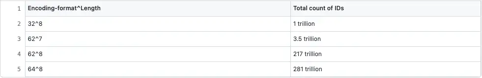
The total count of short URLs is directly proportional to the length of the encoded output. However, the length of the short URL must be kept as short as possible for better readability. The base62 encoded output of 7-character length generates 3.5 trillion short URLs. A total count of 3.5 trillion short URLs is exhausted in 100 years when 1000 short URLs are used per second. The guidelines on the encoded output format to improve the readability of a short URL are the following:
- the encoded output contains only alphanumeric characters
- the length of the short URL must not exceed 9 characters
The time complexity of base conversion is O(k), where k is the number of characters (k = 7). The time complexity of base conversion is reduced to constant time O(1) because the number of characters is fixed7.
In summary, a 7-character base62 encoded output satisfies the system requirement.
Write path
The server shortens the long URL entered by the client. The shortened URL is encoded for improved readability. The server persists the encoded short URL into the database. The simplified block diagram of a single-machine URL shortener is the following:
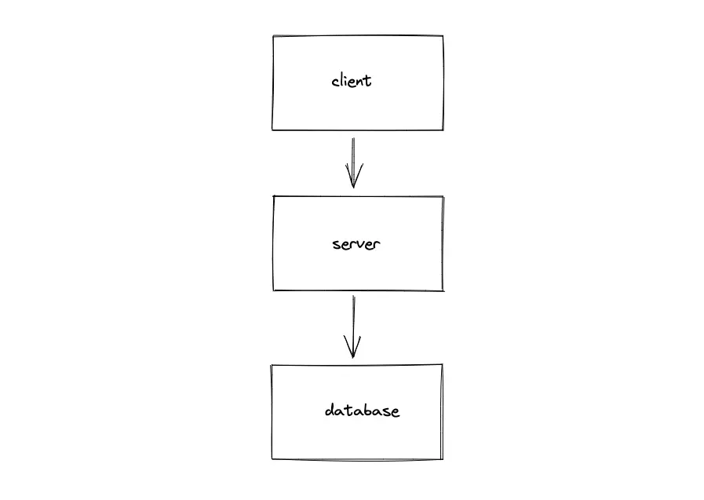
The single-machine solution does not meet the scalability requirements of the URL shortener system. The key generation function is moved out of the server to a dedicated Key Generation Service (KGS) to scale out the system.
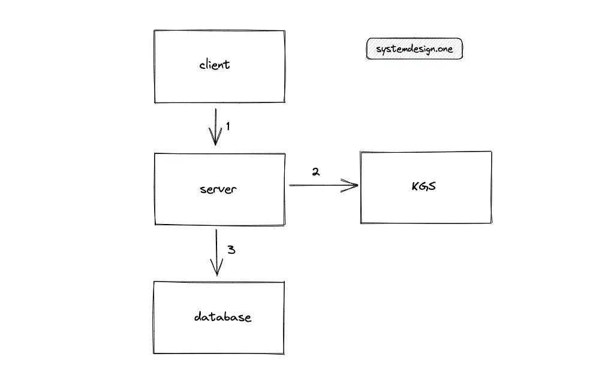
The different solutions to shortening a URL are the following:
- Random ID Generator
- Hashing Function
- Token Range
Random ID Generator solution
The Key Generation Service (KGS) queries the random identifier (ID) generation service to shorten a URL. The service generates random IDs using a random function or Universally Unique Identifiers (UUID). Multiple instances of the random ID generation service must be provisioned to meet the demand for scalability.
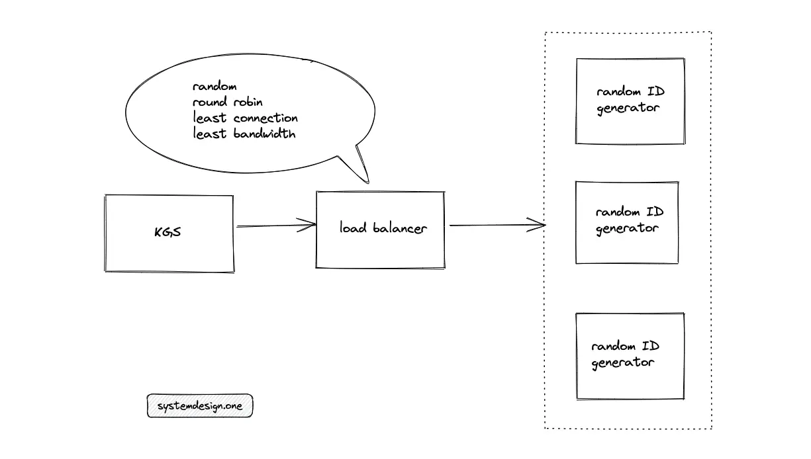
The random ID generation service must be stateless to easily replicate the service for scaling. The ingress is distributed to a random ID generation service using a load balancer. The potential load-balancing algorithms to route the traffic are the following:
- round-robin
- least connection
- least bandwidth
- modulo-hash function
- consistent hashing
The consistent hashing or the modulo-hash function-based load balancing algorithms might result in unbalanced (hot) replicas when the same long URL is entered by a large number of clients at the same time. The KGS must verify if the generated short URL already exists in the database because of the randomness in the output.
The random ID generation solution has the following tradeoffs:
- the probability of collisions is high due to randomness
- breaks the 1-to-1 mapping between a short URL and a long URL
- coordination between servers is required to prevent a collision
- frequent verification of the existence of a short URL in the database is a bottleneck
An alternative to the random ID generation solution is using Twitter’s Snowflake8. The length of the snowflake output is 64 bits. The base62 encoding of snowflake output yields an 11-character output because each base62 encoded character consumes 6 bits. The snowflake ID is generated by a combination of the following entities (real-world implementation might vary):
- Timestamp
- Data center ID
- Worker node ID
- Sequence number
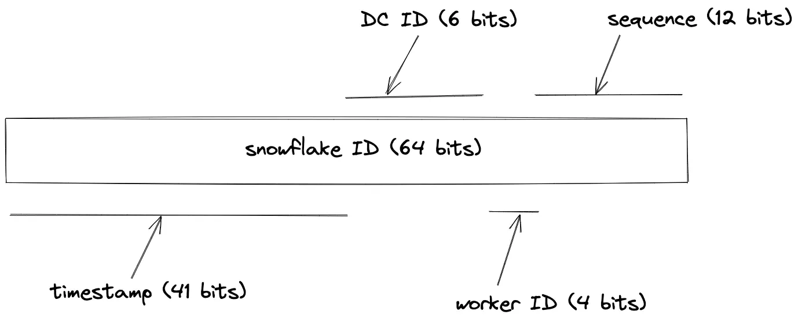
The downsides of using snowflake ID for URL shortening are the following:
- probability of collision is higher due to the overlapping bits
- generated short URL becomes predictable due to known bits
- increases the complexity of the system due to time synchronization between servers
In summary, do not use the random ID generator solution for shortening a URL.
Hashing Function solution
The KGS queries the hashing function service to shorten a URL. The hashing function service accepts a long URL as an input and executes a hash function such as the message-digest algorithm (MD5) to generate a short URL9. The length of the MD5 hash function output is 128 bits. The hashing function service is replicated to meet the scalability demand of the system.
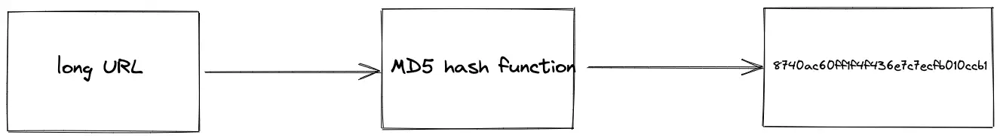
The hashing function service must be stateless to easily replicate the service for scaling. The ingress is distributed to the hashing function service using a load balancer. The potential load-balancing algorithms to route the traffic are the following:
- weighted round-robin
- least response time
- IP address hash
- modulo-hash function
- consistent hashing
The hash-based load balancing algorithms result in hot replicas when the same long URL is entered by a large number of clients at the same time. The non-hash-based load-balancing algorithms result in redundant operations because the MD5 hashing function produces the same output (short URL) for the same input (long URL).
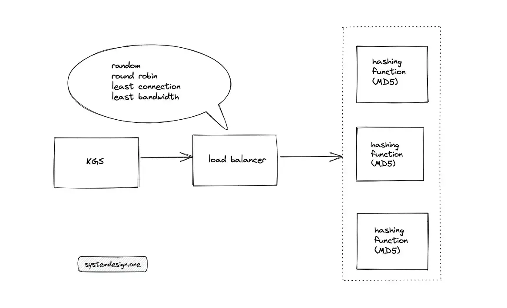
The base62 encoding of MD5 output yields 22 characters because each base62 encoded character consumes 6 bits and MD5 output is 128 bits. The encoded output must be truncated by considering only the first 7 characters (42 bits) to keep the short URL readable. However, the encoded output of multiple long URLs might yield the same prefix (first 7 characters), resulting in a collision. Random bits are appended to the suffix of the encoded output to make it nonpredictable at the expense of short URL readability.
An alternative hashing function for URL shortening is SHA256. However, the probability of a collision is higher due to an output length of 256 bits. The tradeoffs of the hashing function solution are the following:
- predictable output due to the hash function
- higher probability of a collision
In summary, do not use the hashing function solution for shortening a URL.
Token Range solution
The KGS queries the token service to shorten a URL. An internal counter function of the token service generates the short URL and the output is monotonically increasing.
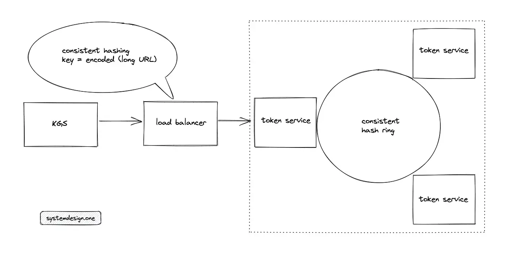
The token service must be horizontally partitioned (shard) to meet the scalability requirements of the system. The potential sharding schemes for the token service are the following:
The list and modulus partitioning schemes do not meet the scalability requirements of the system because both schemes limit the number of token service instances. The sharding based on consistent hashing fits the system requirements as the token service scales out by provisioning new instances.
The ingress is distributed to the token service using a load balancer. The percent-encoded long URLs are load-balanced using consistent hashing to preserve the 1-to-1 mapping between the long and short URLs. However, a load balancer based on consistent hashing might result in hot shards when the same long URL is entered by a large number of clients at the same time.
The output of the token service instances must be non-overlapping to prevent a collision. A highly reliable distributed service such as Apache Zookeeper or Amazon DynamoDB is used to coordinate the output range of token service instances. The service that coordinates the output range between token service instances is named the token range service.
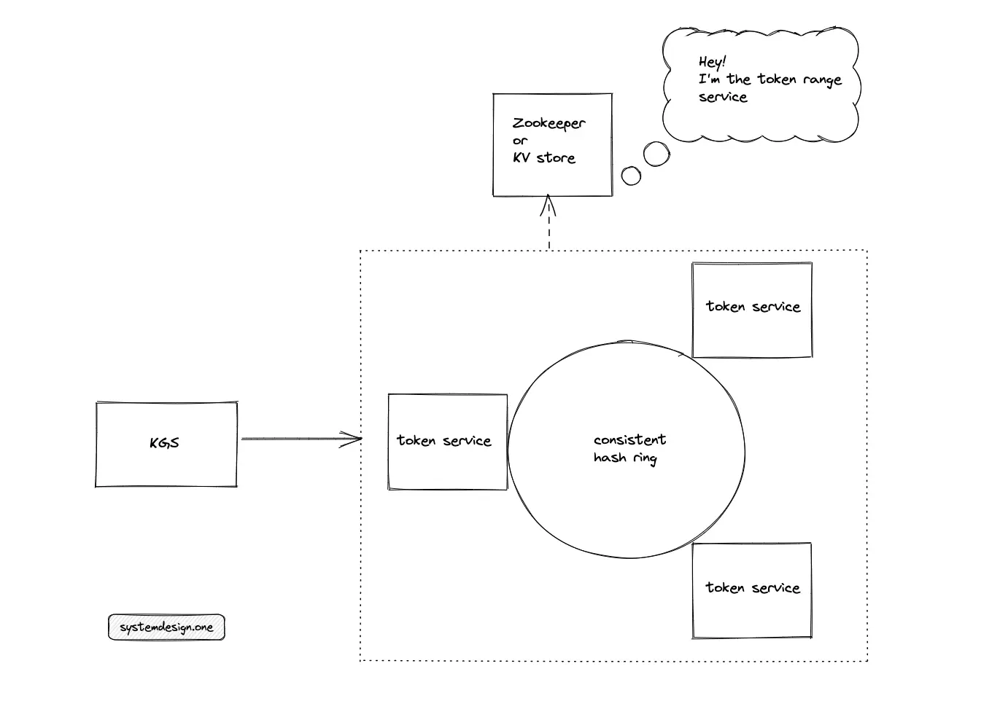
When the key-value store is chosen as the token range service, the quorum must be set to a higher value to increase the consistency of the token range service. The stronger consistency prevents a range collision by preventing fetching the same output range by multiple token services.
When an instance of the token service is provisioned, the fresh instance executes a request for an output range from the token range service. When the fetched output range is fully exhausted, the token service requests a fresh output range from the token range service.
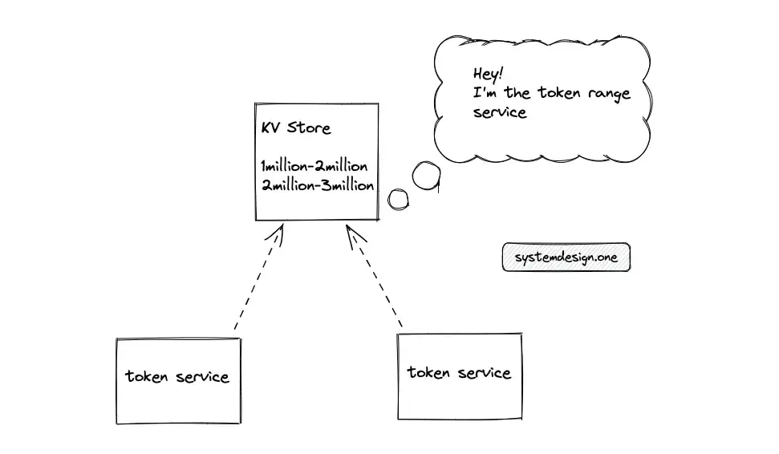
The token range service might become a bottleneck if queried frequently. Either the output range or the number of token range service replicas must be incremented to improve the reliability of the system. The token range solution is collision-free and scalable. However, the short URL is predictable due to the monotonically increasing output range. The following actions degrade the predictability of the shortened URL:
- append random bits to the suffix of the output
- token range service gives a randomized output range
The time complexity of short URL generation using token service is constant O(1). In contrast, the KGS must perform one of the following operations before shortening a URL to preserve the 1-to-1 mapping:
- query the database to check the existence of the long URL
- use the putIfAbsent procedure to check the existence of the long URL
Querying the database is an expensive operation because of the disk input/output (I/O) and most of the NoSQL data stores do not support the putIfAbsent procedure due to eventual consistency.
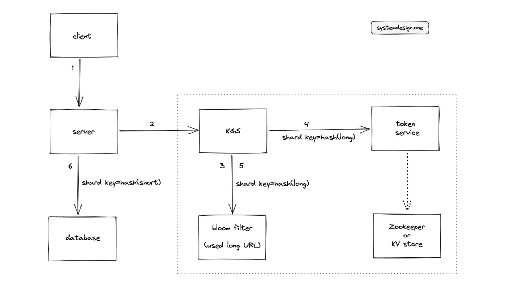
A bloom filter is used to prevent expensive data store lookups on URL shortening. The time complexity of a bloom filter query is constant O(1)10. The KGS populates the bloom filter with the long URL after shortening the long URL. When the client enters a customized short URL, the KGS queries the bloom filter to check if the long URL exists before persisting the custom short URL into the data store. However, the bloom filter query might yield false positives, resulting in a database lookup. In addition, the bloom filter increases the operational complexity of the system.
When the client enters an already existing long URL, the KGS must return the appropriate short URL but the database is partitioned with the short URL as the partition key. The short URL as the partition key resonates with the read and write paths of the URL shortener.
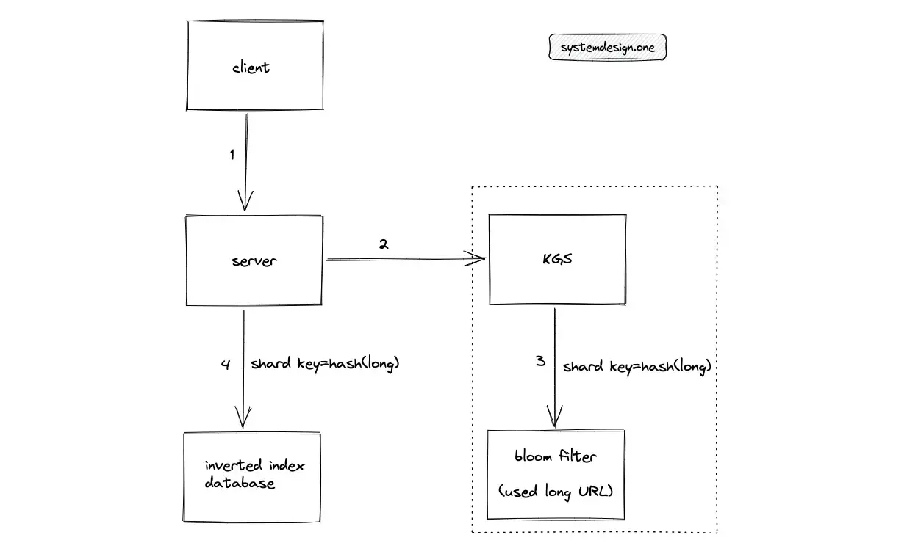
A naive solution to finding the short URL is to build an index on the long URL column of the data store. However, the introduction of a database index degrades the write performance and querying remains complex due to sharding using the short URL key.
The optimal solution is to introduce an additional data store (inverted index) with mapping from the long URLs to the short URLs (key-value schema). The additional data store improves the time complexity of finding the short URL of an already existing long URL record. On the other hand, an additional data store increases storage costs. The additional data store is partitioned using consistent hashing. The partition key is the long URL to quickly find the URL record. A key-value store such as DynamoDB is used as the additional data store.
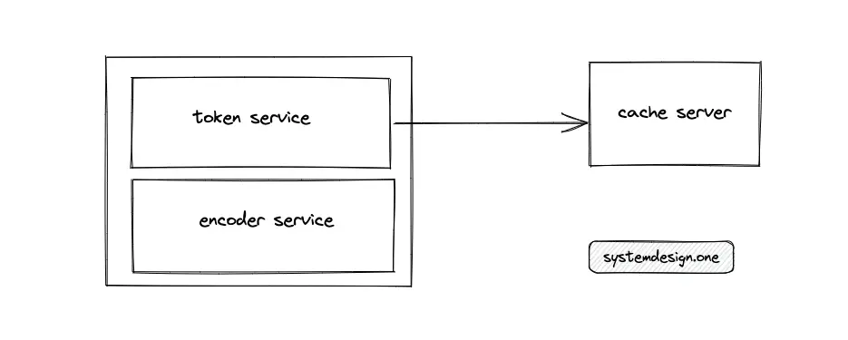
The token service stores some short URLs (keys) in memory so that the token service quickly provides the keys to an incoming request. The keys in the token service must be distributed by an atomic data structure to handle concurrent requests. The output range stored in token service memory is marked as used to prevent a collision. The downside of storing keys in memory is losing the specific output range of keys on a server failure. The output range must be moved out to an external cache server to scale out the token service and improve its reliability.
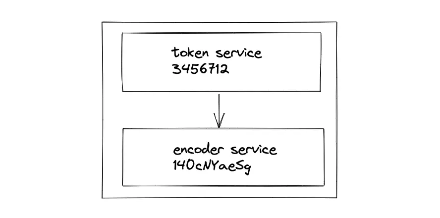
The output of the token service must be encoded within the token server using an encoding service to prevent external network communication. An additional function executes the encoding of token service output.
In summary, use the token range solution for shortening a URL.
Read path
The server redirects the shortened URL to the original long URL. The simplified block diagram of a single-machine URL redirection is the following:
The single-machine solution does not meet the scalability requirements of URL redirection for a read-heavy system. The disk I/O due to frequent database access is a potential bottleneck.
The URL redirection traffic (Egress) is cached following the 80/20 rule to improve latency. The cache stores the mapping between the short URLs and the long URLs. The cache handles uneven traffic and traffic spikes in URL redirection. The server must query the cache before hitting the data store. The cache-aside pattern is used to update the cache. When a cache miss occurs, the server queries the data store and populates the cache. The tradeoff of using the cache-aside pattern is the delay in initial requests. As the data stored in the cache is memory bound, the Least Recently Used (LRU) policy is used to evict the cache when the cache server is full.
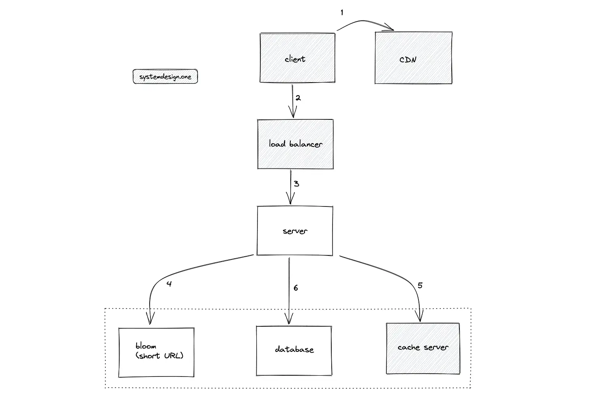
The cache is introduced at the following layers of the system for scalability:
- client
- content delivery network (CDN)
- reverse proxy
- dedicated cache servers
A shared cache such as CDN or a dedicated cache server reduces the load on the system. On the other hand, the private cache is only accessible by the client and does not significantly improve the system’s performance. On top of that, the definition of TTL for the private cache is crucial because private cache invalidation is difficult. Dedicated cache servers such as Redis or Memcached are provisioned between the following system components to further improve latency:
- server and data store
- load balancer and server
The typical usage pattern of a URL shortener by the client is to shorten a URL and access the short URL only once. The cache update on a single access usage pattern results in cache thrashing. A bloom filter on short URLs is introduced on cache servers and CDN to prevent cache thrashing. The bloom filter is updated on the initial access to a short URL. The cache servers are updated only when the bloom filter is already set (multiple requests to the same short URL).
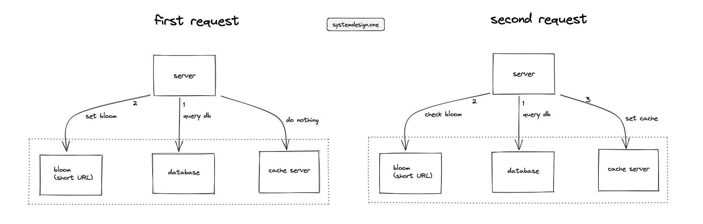
The cache and the data store must not be queried if the short URL does not exist. A bloom filter on the short URL is introduced to prevent unnecessary queries. If the short URL is absent in the bloom filter, return an HTTP status code of 404. If the short URL is set in the bloom filter, delegate the redirection request to the cache server or the data store.
The cache servers are scaled out by performing the following operations:
- partition the cache servers (use the short URL as the partition key)
- replicate the cache servers to handle heavy loads using leader-follower topology
- redirect the write operations to the leader
- redirect all the read operations to the follower replicas
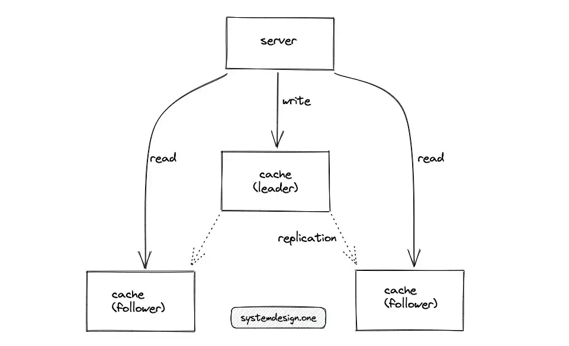
When multiple identical requests arrive at the cache server at the same time, the cache server will collapse the requests and will forward a single request to the origin server on behalf of the clients. The response is reused among all the clients to save bandwidth and system resources.
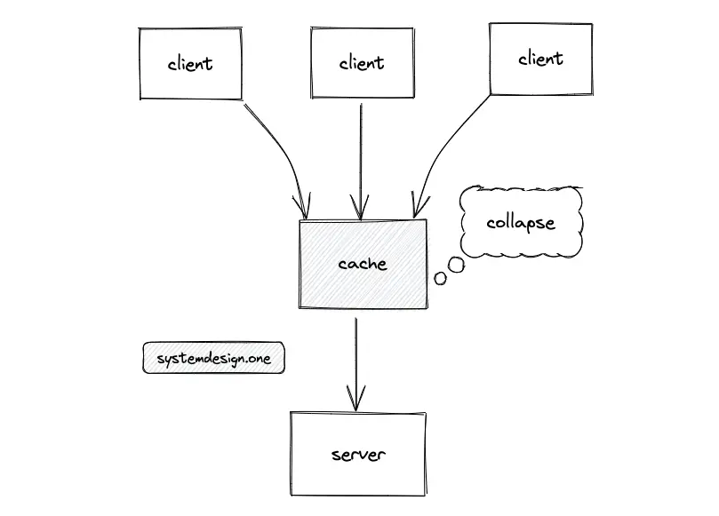
The following intermediate components are introduced to satisfy the scalability demand for URL redirection:
- Domain Name System (DNS)
- Load balancer
- Reverse proxy
- CDN
- Controller service to automatically scale the services
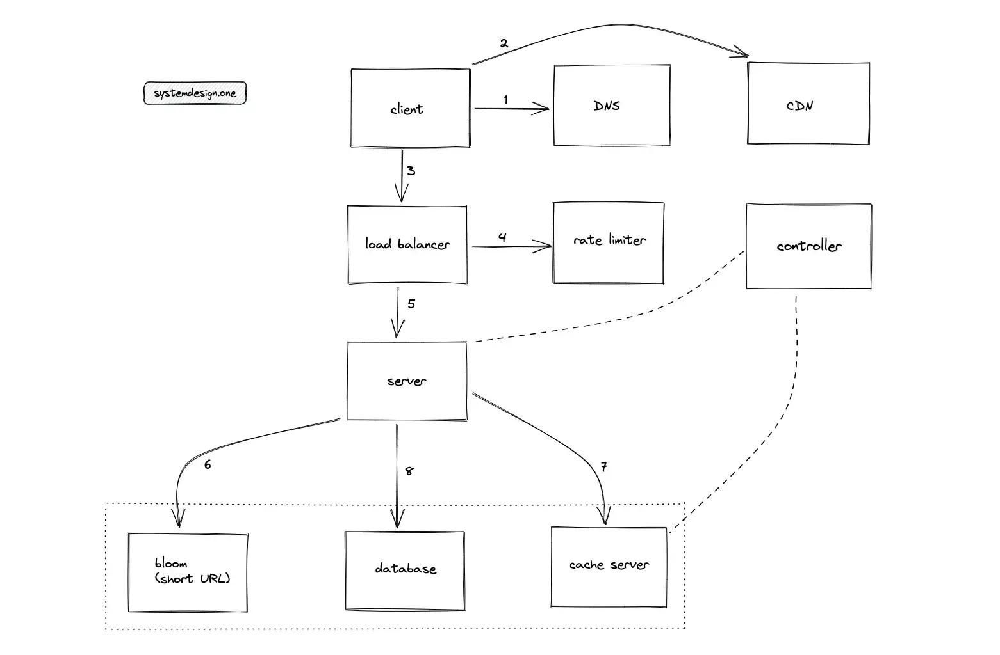
The following smart DNS services improve URL redirection:
- weighted round-robin
- latency based
- geolocation based
The reverse proxy is used as an API Gateway. The reverse proxy executes SSL termination and compression at the expense of increased system complexity. When an extremely popular short URL is accessed by thousands of clients at the same time, the reverse proxy collapse forwards the requests to reduce the system load. The load balancer must be introduced between the following system components to route traffic between the replicas or shards:
- client and server
- server and database
- server and cache server
The CDN serves the content from locations closer to the client at the expense of increased financial costs. The Pull CDN approach fits the URL redirection requirements. A dedicated controller service is provisioned to automatically scale out or scale down the system components based on the system load.
The microservices architecture improves the fault tolerance of the system. The services such as Etcd or Zookeeper help services find each other (known as service discovery). In addition, the Zookeeper is configured to monitor the health of the services in the system by sending regular heartbeat signals. The downside of microservices architecture is the increased operational complexity.
Download my system design playbook for free on newsletter signup:
Design Deep Dive
Availability
The availability of the system is improved by the following configuration:
- load balancer runs either in active-active or active-passive mode
- KGS runs either in active-active or active-passive mode
- back up the storage servers at least once a day to object storage such as AWS S3 to aid disaster recovery
- rate-limiting the traffic to prevent DDoS attacks and malicious users
Rate Limiting
Rate limiting the system prevents malicious clients from degrading the service. The following entities are used to identify the client for rate limiting:
- API developer key for a registered client
- HTTP cookie for an anonymous client
The API developer key is transferred either as a JSON Web Token (JWT) parameter or as a custom HTTP header. The Internet Protocol (IP) address is also used to rate limit the client.
Scalability
Scaling a system is an iterative process. The following actions are repeatedly performed to scale a system11:
- benchmark or load test
- profile for bottlenecks or a single point of failure (SPOF)
- address bottlenecks
The read and write paths of the URL shortener are segregated to improve the latency and prevent network bandwidth from becoming a bottleneck.
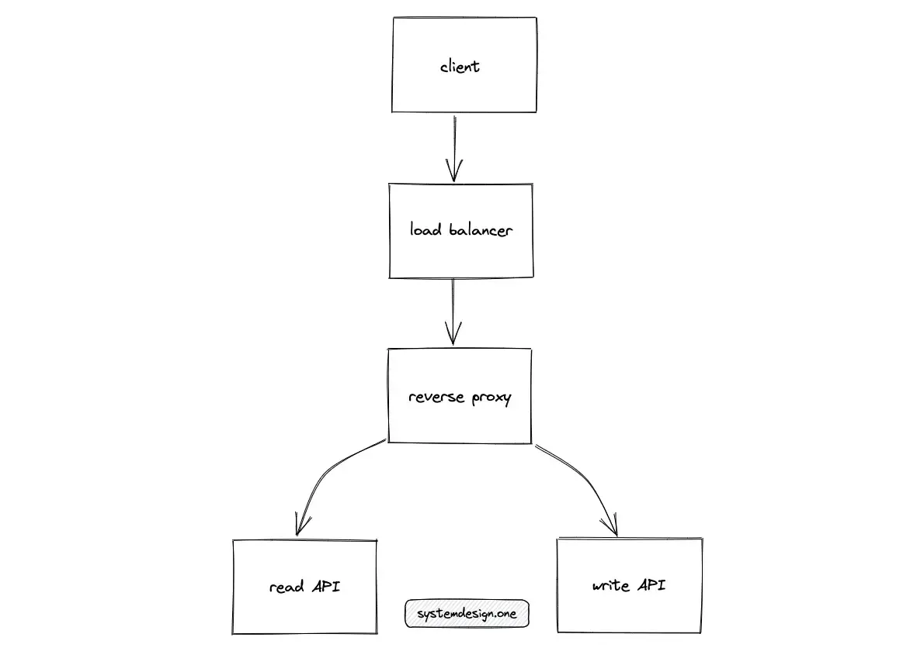
The general guidelines to horizontally scale a service are the following:
- keep the service stateless
- partition the service
- replicate the service
Fault tolerance
The microservices architecture improves the fault tolerance of the system. The microservices are isolated from each other and the services will fail independently. Simply put, a service failure means reduced functionality without the whole system going down. For instance, the failure of a metric service will not affect the URL redirection requests. The event-driven architecture also helps to isolate the services and improve the reliability of the system, and scale by naturally supporting multiple consumers12.
The introduction of a message queue such as Apache Kafka further improves the fault tolerance of the URL shortener. The message queue must be provisioned in the write and read paths of the system. However, the message queue must be checkpointed frequently for reliability.
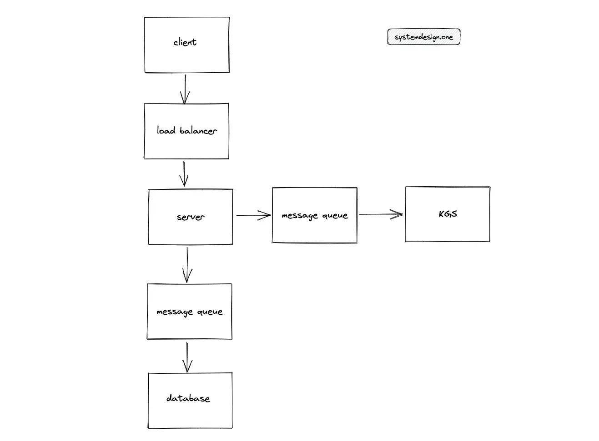
The reasons for using a message queue are the following12:
- isolate the components
- allows concurrent operations
- fails independently
- asynchronous processing
The tradeoffs of using a message queue are the following:
- makes the system asynchronous
- increases the overall system complexity
Further actions to optimize the fault tolerance of the system are the following:
- implement backpressure between services to prevent cascading failures
- services must exponentially backoff when a failure occurs for a faster recovery
- leader election implemented using Paxos or Raft consensus algorithms
- snapshot or checkpoint stateful services such as a bloom filter
Partitioning
The following stateful services are partitioned for scalability:
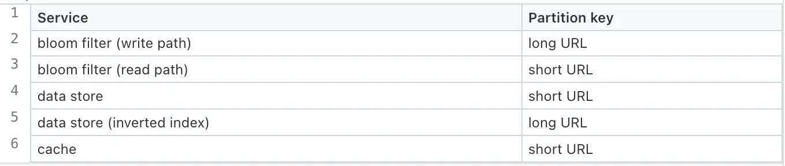
Concurrency
The KGS must acquire a mutex (lock) or a semaphore on the atomic data structure distributing the short URLs to handle concurrency. The lock prevents the distribution of the same short URL to distinct shortening requests from the KGS, resulting in a collision. Multiple data structures distribute the short URL in a single instance of the token service to improve latency. The lock must be released when the short URL is used.
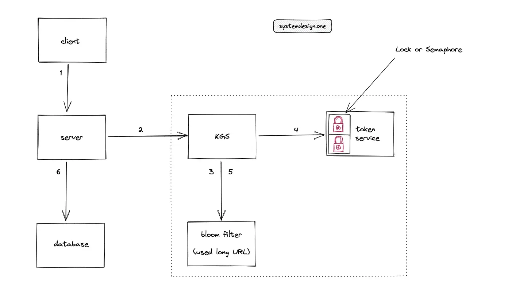
When multiple clients enter the same long URL at the same time, all the clients must receive the same short URL. A naive approach to solving this problem is by introducing a message queue and grouping the duplicate requests. An alternative suboptimal approach is to use the collapsed forwarding feature of a reverse proxy. However, multiple reverse proxies might exist in a distributed system. The optimal solution is using a distributed lock such as the Chubby or the Redis lock. The distributed lock must be acquired on the long URL. The distributed lock internally uses Raft or Paxos consensus algorithm.
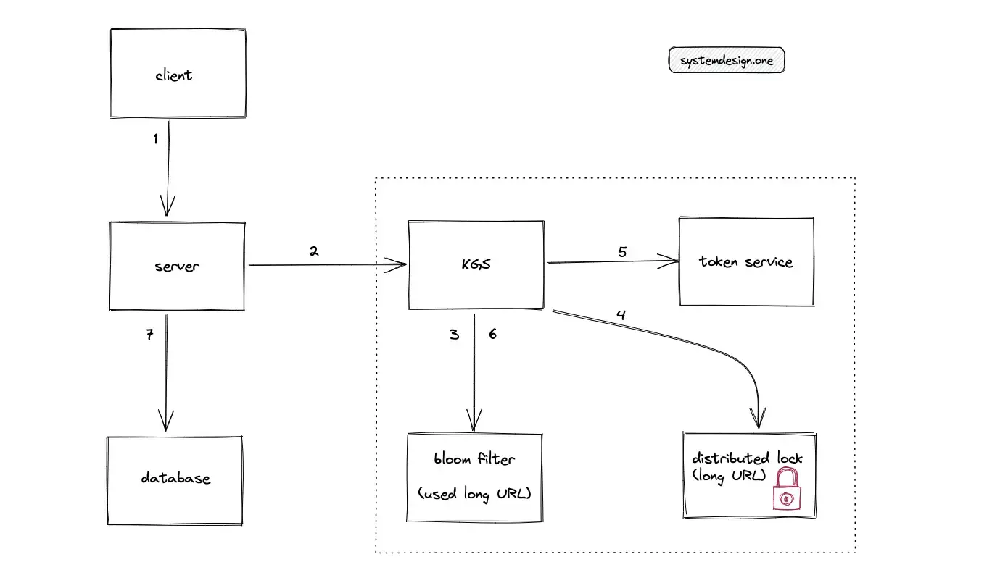
The distributed lock service must be used when the client enters a custom URL as well to prevent a collision. A reasonable TTL must be set on the distributed lock to prevent starvation. The tradeoff of using a distributed lock is the slight degradation of latency. The distributed lock service is unnecessary if the 1-to-1 mapping between the URLs is not a system requirement. The URL shortening workflow in a highly concurrent system is the following:
- KGS checks the bloom filter for the existence of a long URL
- Acquire a distributed lock on the long URL
- Shorten the long URL
- Populate the bloom filter with the long URL
- Release the distributed lock
Thread safety in the bloom filter is achieved using a concurrent BitSet. The tradeoff is the increased latency to some write operations. A lock must be acquired on the bloom filter to handle concurrency. A variant of the bloom filter named naive striped bloom filter supports highly concurrent reads at the expense of extra space.
Analytics
The generation of analytics on the usage pattern of the clients is one of the crucial features of a URL shortening service. Some of the popular URL-shortening services like Bitly make money by offering analytics on URL redirections12. The HTTP headers of URL redirection requests are used to collect data for the generation of analytics. In addition, the IP address of the client identifies the country or location. The most popular HTTP headers useful for analytics are the following:
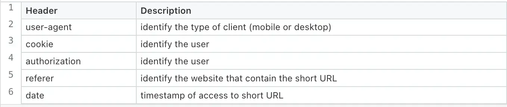
The workflow for the generation of analytics is the following12:
- The client requests a URL redirection
- The server responds with the long URL
- The server puts a message on the message queue
- The archive service executes a batch operation to move messages from the message queue to HDFS
- Hadoop is executed on the collected data on HDFS to generate offline analytics
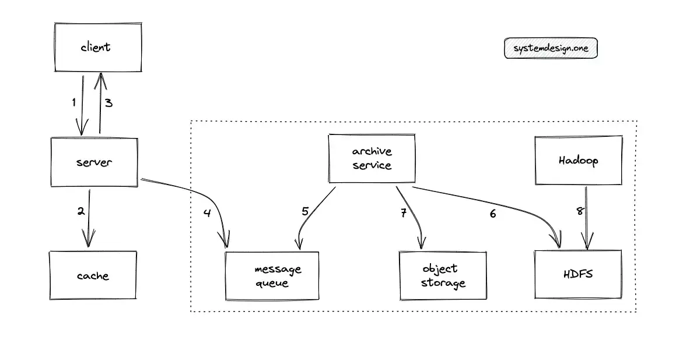
A data warehousing solution such as Amazon Redshift or Snowflake might be used for the analytics database.
Database cleanup
The expired records in the database are removed to save storage costs. Active removal of expired records in the database might overload the database and degrade the service. The approaches to the removal of the expired records from the database are the following:
- lazy removal
- dedicated cleanup service
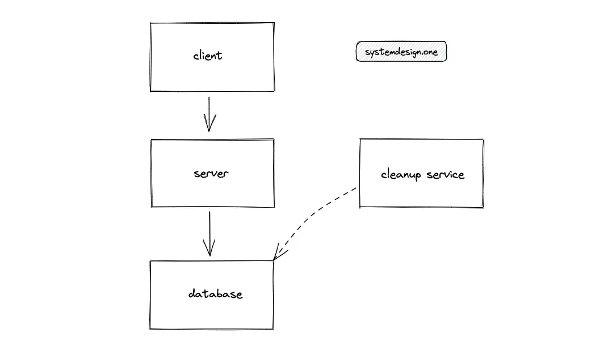
Lazy removal
When the client tries to access an expired short URL, remove the record from the database. The server responds to the client with a status code of 404 Not found. On the other hand, if the client never visits an expired record, the record sits there forever and consumes storage space.
Dedicated cleanup service
A dedicated cleanup service must be executed during non-peak (low traffic) hours to remove the expired short URLs. The cleanup service scans the whole database for expired records. If the traffic suddenly spikes during the execution of the cleanup service, the cleanup service must be stopped, and the system fallbacks to the lazy removal approach.
Archive
The unused data in the database is archived to save storage costs. The data that is frequently accessed is classified as hot data and the data that was not accessed for a significant amount of time (assume a time frame of 3 years) is classified as cold data.
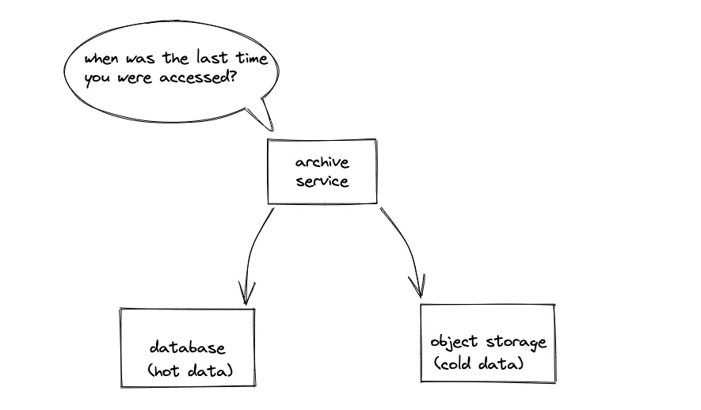
The last_visited timestamp column of the database is used for data classification. The cold data is compressed and stored in object storage (AWS S3) during non-peak hours to avoid degradation of the service. However, maintenance of object storage and data classification is an additional operational effort. The unused data must be archived only if you are certain that the data will not be accessed in the future.
Monitoring
Monitoring is essential to identify system failures before they lead to actual problems to increase the availability of the system. Monitoring is usually implemented by installing an agent on each of the servers (services). The agent collects and aggregates the metrics and publishes the result data to a central monitoring service. Dashboards are configured to visualize the data13.
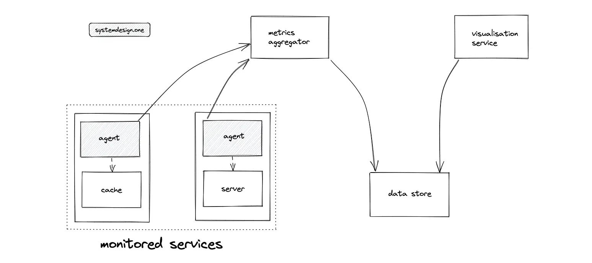
Centralized logging is required to quickly isolate the cause of a failure instead of hopping between servers. The popular log aggregation and monitoring services are fluentd and datadog. The sidecar design pattern is used to run the agent and collect metrics. The following metrics must be monitored in general to get the best results:
- operating system (CPU load, memory, disk I/O)
- generic server (cache hit ratio, queries per second)
- application (latency, failure rate)
- business (number of logins, financial costs)
Security
The following list covers some of the most popular security measures14:
- use JWT token for authorization
- rate limit the requests
- encrypt the data
- sanitize user input to prevent Cross Site Scripting (XSS)
- use parameterized queries to prevent SQL injection
- use the principle of least privilege
Summary
The URL shortening service is a popular system design interview question. Although the use cases of a URL shortener seem trivial, building an internet-scale URL shortener is a challenging task.
What to learn next?
Download my system design playbook for free on newsletter signup:
Questions and Solutions
If you would like to challenge your knowledge on the topic, visit the article: Knowledge Test
License
CC BY-NC-ND 4.0: This license allows reusers to copy and distribute the content in this article in any medium or format in unadapted form only, for noncommercial purposes, and only so long as attribution is given to the creator. The original article must be backlinked.
References
-
URL shortening, Wikipedia.org ↩︎
-
TinyURL OpenAPI, tinyurl.com ↩︎
-
Bitly developer API, dev.bitly.com ↩︎
-
Donne Martin, System Design Primer Comparison of RPC and REST, GitHub.com ↩︎
-
MDN web docs HTTP Status codes, mozilla.org ↩︎
-
MDN web docs Redirections in HTTP, mozilla.org ↩︎
-
Sophie, System Design for Big Data [tinyurl] (2013), blogspot.com ↩︎
-
Ryan King, Announcing Snowflake (2010), blog.twitter.com ↩︎
-
MD5 Hash function, Wikipedia.org ↩︎
-
Bloom filter, Wikipedia.org ↩︎
-
Donne Martin, Design Pastebin.com (or Bit.ly) (2017), GitHub.com ↩︎
-
Todd Hoff, Bitly: Lessons Learned Building A Distributed System That Handles 6 Billion Clicks A Month (2014), highscalability.com ↩︎
-
Web Scalability for Startup Engineers by Artur Ejsmont (2015), amazon.com ↩︎
-
Donne Martin, System Design Primer Security Guide (2017), GitHub.com ↩︎